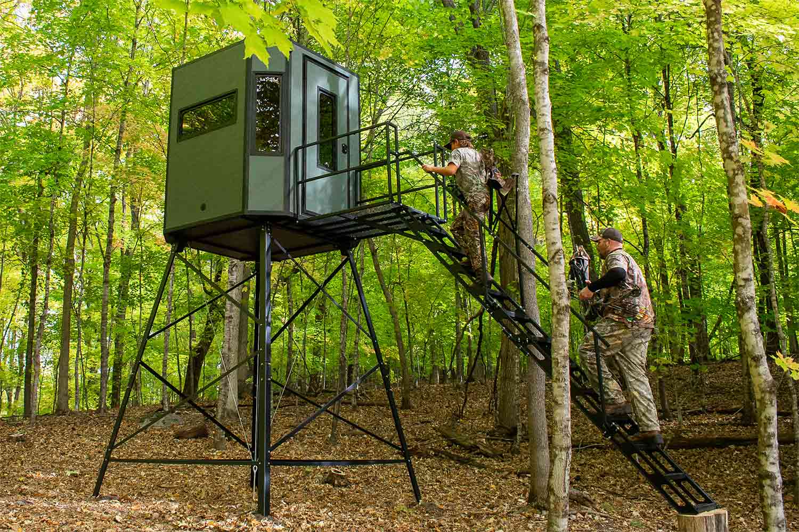
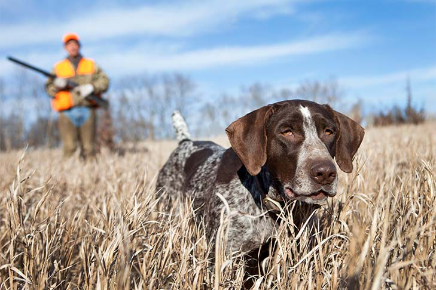

 See tehnika hõlmab uluki jälitamist vaikselt ja märkamatult, et saavutada laskeulatus ilma looma häirimata.
Jahimees ootab varjatult, tavaliselt kõrgendikul või puu otsas, uluki möödumist soodsast kohast.
=======See tehnika hõlmab uluki jälitamist vaikselt ja märkamatult, et saavutada laskeulatus ilma looma häirimata.
Jahimees ootab varjatult, tavaliselt kõrgendikul või puu otsas, uluki möödumist soodsast kohast.
>>>>>>> 9a3660d2fad7cf11d255b32b973a6f519eb45246Ulukit meelitatakse lõksu või laskeulatusse, kasutades sööta või peibutust.
 Kasutatakse koeri uluki jälitamiseks ja ajamiseks, et jahimees saaks teha tõhusa lasku.
Grupp jahimehi liigub läbi metsa, ajades ulukeid kindlasse suunda, kus teised jahimehed on valmis laskma.
See nõuab erilisi oskusi ja tehnikaid, et läheneda lendavatele või maapinnal olevatele lindudele piisavalt lähedale.